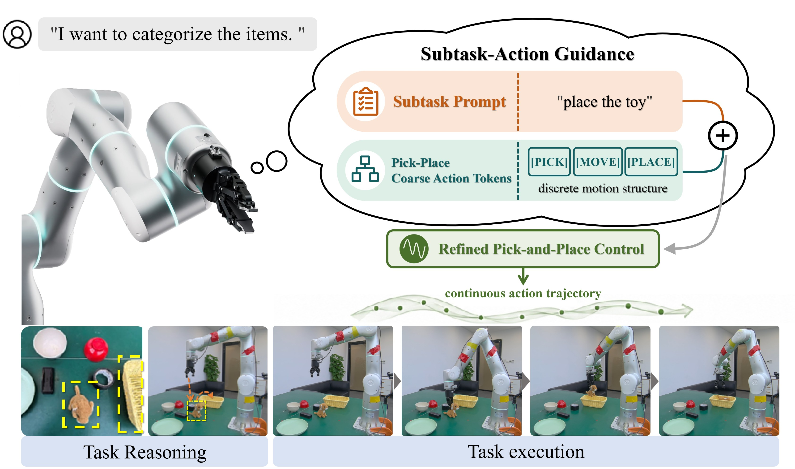
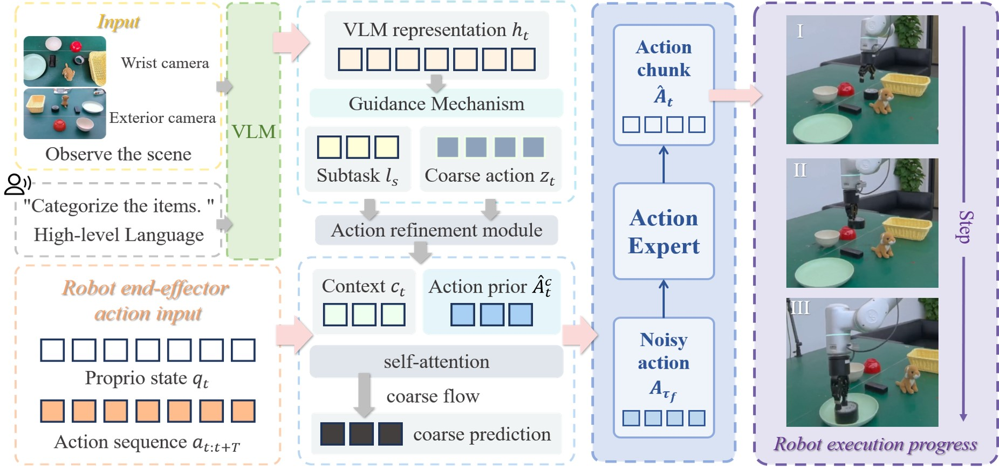
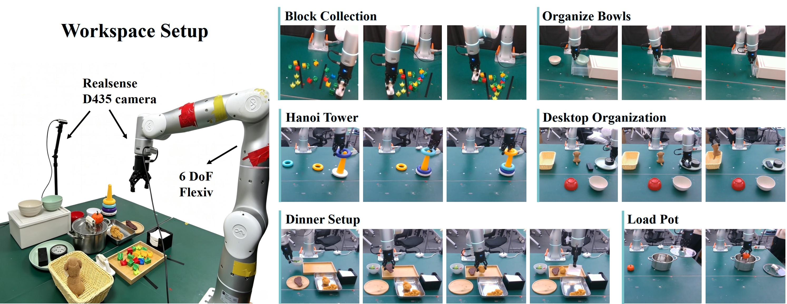

Author names, affiliations, contact information, and identifying external links are omitted for double-blind review.
Video Presentation
Abstract
Long-horizon manipulation requires policies to preserve task intent while adapting motor commands across successive stages.
Existing VLA models either predict actions directly or introduce intermediate reasoning; however, subtask semantics and their
corresponding action trajectories remain weakly coupled during policy learning, limiting the translation of inferred subtasks into
executable actions. To address this issue, we introduce CAST, which learns explicit subtask–action guidance through
paired supervision. Specifically, Subtask-Action Joint Modeling (SAJM) jointly predicts the subtask prompt and coarse
action tokens encoding the aligned trajectory segment. Building on this guidance, the Action Refinement Module (ARM)
refines it into a continuous action prior for fine-grained motor control. Experiments demonstrate that CAST achieves a
95.6% average success rate on LIBERO-LONG and outperforms π0.5 by
11.7% in real-world long-horizon tasks.
Motivation & Insight
⚠️ The Challenge: Subtask–Action Misalignment
Existing approaches often provide either semantic reasoning or motion guidance, while their correspondence remains
weakly constrained during policy learning. Without supervised alignment between subtask semantics and
executable motion, an inferred stage may not reliably guide the actions needed to complete it.
💡 Our Insight: Learn What to Do and How to Move Together
Humans draw on both semantic knowledge and motor experience to develop appropriate manipulation strategies. When manipulating
tabletop objects, they typically identify the target object and form a coarse manipulation intent, such as grasping
or placing, before refining the subsequent movements. This coarse-to-fine process motivates representing the
current stage with a subtask prompt and the motion structure of its aligned trajectory segment with coarse action tokens.
🚀 CAST: Coupling Reasoning with Execution
CAST uses SAJM to jointly predict the current subtask prompt and coarse action tokens from its aligned trajectory
segment, forming explicit subtask–action guidance. ARM refines this guidance into a
continuous trajectory prior. Conditioned on this prior together with current visual and proprioceptive inputs,
the action expert generates fine-grained action sequences that preserve subtask intent while adapting to updated observations.

Figure 1. Coupling reasoning and execution for long-horizon manipulation. CAST learns explicit subtask–action guidance by jointly predicting subtask prompts and coarse action tokens from aligned trajectory segments, which are refined into continuous actions for long-horizon manipulation.
Method
CAST consists of a vision-language backbone, a Guidance Mechanism, the Action Refinement Module, and an action expert.
The Guidance Mechanism jointly predicts subtask prompts and coarse action tokens as structured guidance. ARM then refines this
representation into a continuous action prior that conditions the action expert for fine-grained action generation.

Figure 2. Overview of CAST. SAJM bridges task semantics with motion structure, while ARM refines coarse action guidance into a continuous prior for fine-grained action generation.
Contributions
Subtask–Action Guidance
Conceptually, CAST introduces subtask–action guidance through Subtask-Action Joint Modeling (SAJM), explicitly pairing each subtask prompt with coarse action tokens from its aligned trajectory segment.
Continuous Action Refinement
We develop an Action Refinement Module (ARM) that refines the learned guidance into a continuous trajectory prior, providing structured conditioning for fine-grained action generation.
Simulation and Real-World Evaluation
Empirically, we validate CAST through extensive experiments on simulation and real-world tasks, demonstrating consistent improvements over strong VLA baselines in long-horizon manipulation.
Experiments
We evaluate CAST on the ten tasks of LIBERO-LONG and six real-world long-horizon manipulation tasks using a Flexiv robot.
Simulation results are averaged over three evaluations of 50 trials per task. Each real-world task is evaluated over 30 trials.
Simulation results on LIBERO-LONG
Table 1. Performance on LIBERO-LONG. Success rates (%) are reported across ten tasks.
Method
Subtask Guidance
Action Prior
Avg.
Soup + box in basket
Box + butter in basket
Stove + pot
Bowl in drawer
Mugs on plates
Book in caddy
Mug + pudding
Soup + sauce in basket
Both pots on stove
Mug in microwave
CoT-VLA
×
×
69.0
–
–
–
–
–
–
–
–
–
–
Seer (scratch)
×
×
78.7
80.0
90.0
91.7
81.7
85.0
65.0
86.7
88.3
51.7
66.7
Seer
×
×
87.7
91.7
90.0
98.3
100
91.7
93.3
85.0
88.3
61.7
71.7
MemoryVLA
×
×
93.4
92.0
96.0
96.0
100
100
100
96.0
96.0
62.0
96.0
Video Policy
×
×
94.0
100
100
100
98.0
94.0
96.0
88.0
96.0
80.0
86.0
π0
✓
×
85.2
96.7
100
88.0
78.0
76.0
82.0
73.7
96.0
66.0
96.0
OpenVLA-OFT
✓
×
94.0
90.0
98.0
98.0
98.0
96.0
100
92.0
100
72.0
96.0
QwenGr00t
✓
×
90.8
88.0
94.0
100
98.0
96.0
100
68.0
100
66.0
98.0
π0.5
✓
×
92.6
100
96.0
98.0
96.0
96.0
100
96.0
90.0
58.0
96.0
UniVLA
×
✓
90.0
100
92.0
94.0
98.0
86.0
100
80.0
100
70.0
82.0
CLaD
×
✓
94.7
100
100
98.0
94.0
91.0
100
95.0
100
82.0
87.0
w/o ARM
✓
×
93.2
96.0
98.0
100
96.0
96.0
98.0
84.0
96.0
90.0
78.0
CAST
✓
✓
95.6
100
98.0
100
100
92.0
100
90.0
100
96.0
80.0
Successful Rollouts on LIBERO-LONG
The following rollouts show CAST successfully completing each of the ten LIBERO-LONG tasks.
Soup and Cream Cheese
Place the alphabet soup and cream cheese box in the basket.
Cream Cheese and Butter
Place the cream cheese box and butter in the basket.
Stove and Moka Pot
Turn on the stove and place the moka pot on it.
Bowl in Drawer
Place the black bowl in the bottom drawer and close it.
Mugs on Plates
Place the white mug on the left plate and the yellow-and-white mug on the right plate.
Book in Caddy
Pick up the book and place it in the back compartment of the caddy.
Mug and Pudding
Place the white mug on the plate and the chocolate pudding to its right.
Soup and Tomato Sauce
Place the alphabet soup and tomato sauce in the basket.
Two Moka Pots
Place both moka pots on the stove.
Mug in Microwave
Place the yellow-and-white mug in the microwave and close it.
Representative LIBERO comparison
π0.5 (top) and CAST (bottom) on representative LIBERO-LONG tasks.
Real-world evaluation

Figure 3. Robot platform and six real-world long-horizon manipulation tasks.
Table 2. Real-world task success rates (%) over 30 trials per task.
Method
Load Pot
Desktop Organization
Hanoi Tower
Block Collection
Dinner Setup
Organize Bowls
Average
RDT
66.7
66.7
16.7
50.0
26.7
56.7
47.3
π0
53.3
70.0
20.0
66.7
43.3
53.3
51.1
ACoT-VLA
73.3
60.0
46.7
66.7
46.7
56.7
58.4
π0.5
76.7
73.3
23.3
63.3
60.0
80.0
62.8
w/o ARM
73.3
66.7
50.0
60.0
33.4
66.7
58.4
CAST
86.7
80.0
63.3
76.7
50.0
90.0
74.5
Load Pot
Place the ingredients into the cooking pot.
Desktop Organization
Identify and place each object in its designated location.
Hanoi Tower
Stack rings under strict size-ordering constraints.
Block Collection
Collect scattered blocks through multi-stage sweeping.
Dinner Setup
Arrange the dinner items in their designated locations.
Organize Bowls
Place two bowls in a drawer and close it.
Comparison with π0.5
We compare CAST with π0.5 on Desktop Organization and Block Collection. π0.5 is more susceptible
to grasp errors and object drops during multi-stage execution, while CAST completes the constituent subtasks more reliably.
π0.5
CAST
Desktop Organization. Rollouts of π0.5 and CAST.
π0.5
CAST
Block Collection. Rollouts of π0.5 and CAST.
Ablation Studies
Subtask-Action Joint Modeling
Joint prediction is compared with subtask-only guidance, action-only guidance, and a decoupled variant that independently
predicts the two signals from the same visual-language context.
Table 3. Ablation of Subtask-Action Joint Modeling. Success rates (%) on three real-world tasks.
Method
Desktop Org.
Hanoi Tower
Dinner Setup
Average
Subtask-only
63.3
36.7
36.7
45.6
Action-only
70.0
33.3
30.0
44.3
Decoupled
76.7
50.0
43.3
56.7
SAJM
80.0
63.3
50.0
64.4
Action Refinement Module
Removing ARM leads to unstable action predictions, including spurious gripper toggling. ARM refines coarse action guidance
into a continuous trajectory prior, resulting in more stable execution.
Without ARM
CAST (with ARM)
Organize Bowls. Rollouts without and with ARM.
Without ARM
CAST (with ARM)
Block Collection. Rollouts without and with ARM.
Robustness Analysis
We evaluate CAST under unseen visual conditions and disturbances introduced during execution. CAST remains responsive to changes
in the scene and continues the task from updated observations.
The target bowl is moved during execution. CAST adapts to its new position and completes the task.
Object Drop
After an object drop, CAST returns to the unfinished subtask and continues the sequence.
Failure Cases and Limitations
CAST may still fail to maintain sufficient clearance from nearby objects during action execution, resulting in unintended collisions.
The following examples illustrate this limitation.
Collision During Bowl Placement
Contact with surrounding objects prevents successful completion of the task.
Collision During Microwave Placement
Interaction with nearby objects disrupts execution before the microwave can be closed.
Incomplete Dinner Setup
The rollout ends before all required task stages are completed.
Code and Supplementary Data
Code. The data preprocessing pipeline and training framework will be released upon completion of internal review.
Supplementary data. A compact sample of simulation and real-world trajectories is provided for inspecting the data format and subtask–action annotations. The complete datasets will be released in the future.